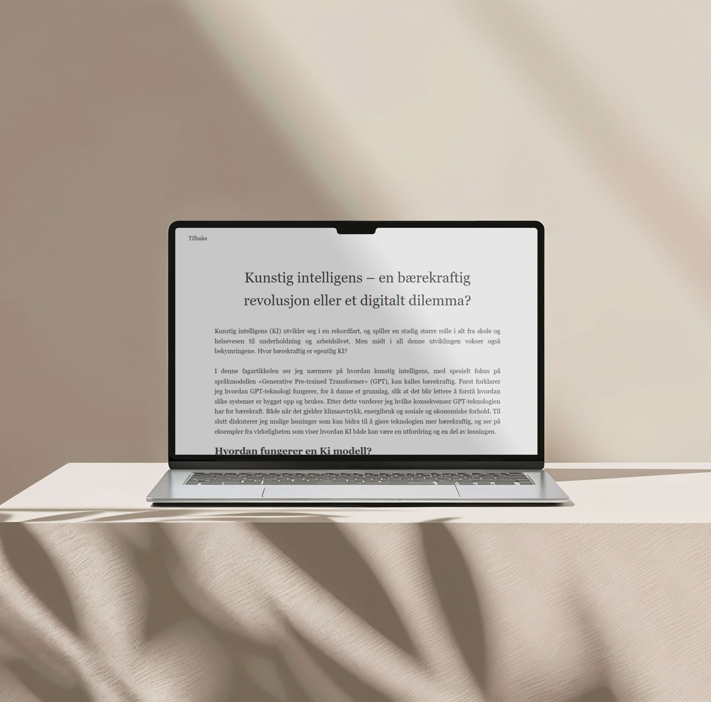
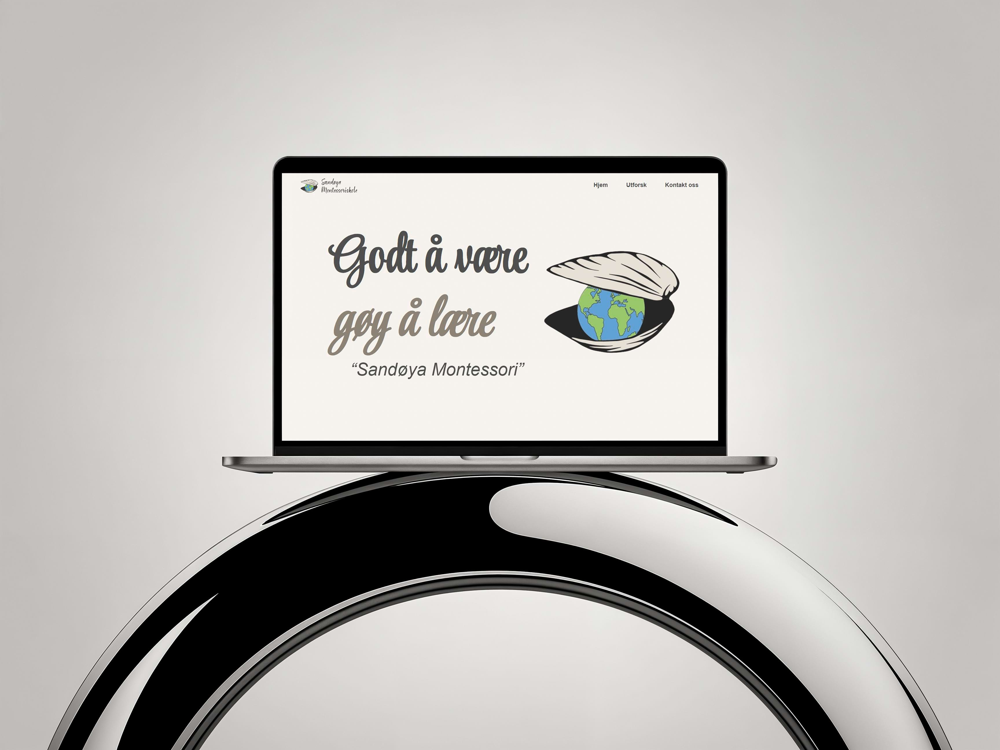
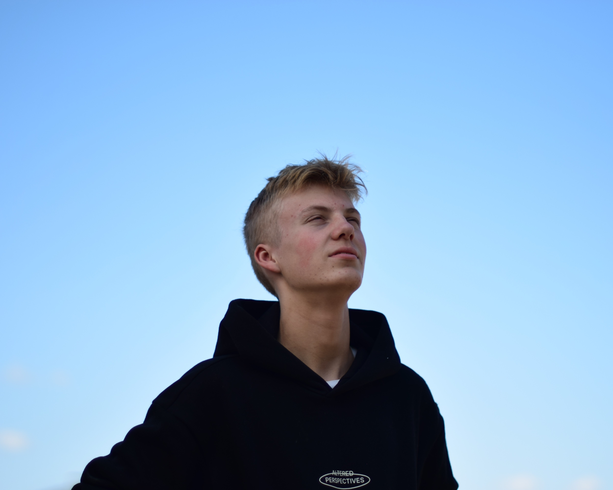

MINE BILDER.
01.
I’ve developed my photography skills by exploring different styles, studying how light behaves, and practicing composition until it feels natural. I focus on clarity, color, and mood, making sure each shot reflects intention. Working with both portrait and landscape scenes has helped me build a balanced, confident workflow.
I edit my photos with a clean and balanced style, focusing on natural colors and clear storytelling. Whether it’s portraits, products, or simple environment shots, I aim to capture expressive, polished images. My workflow is efficient, creative, and consistent across every project.